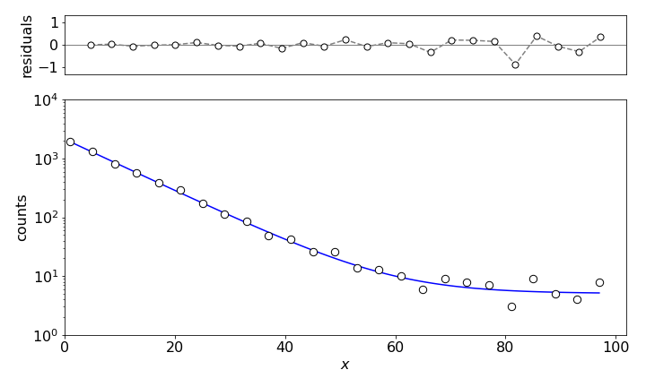
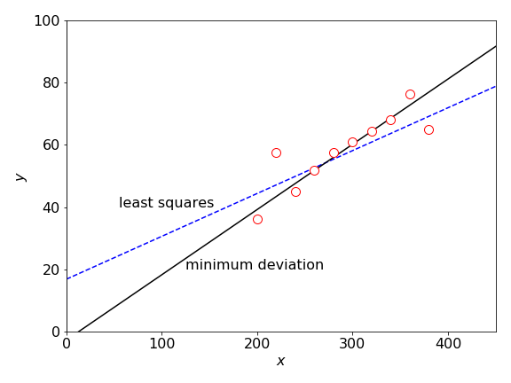
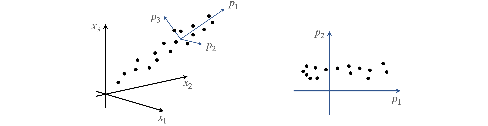
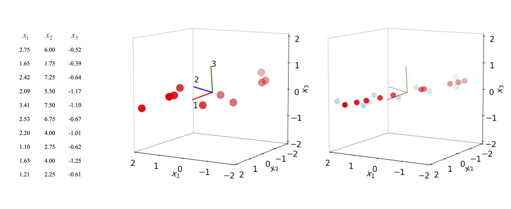

10 Non-linear least squares. Least absolute deviation. Principal component analysis
Contents
10 Non-linear least squares. Least absolute deviation. Principal component analysis#
# import all python add-ons etc that will be needed later on
%matplotlib inline
import numpy as np
from numpy import linalg as lina
import matplotlib.pyplot as plt
from mpl_toolkits.mplot3d import Axes3D
from sympy import *
from scipy.integrate import quad,odeint
init_printing() # allows printing of SymPy results in typeset maths format
plt.rcParams.update({'font.size': 14}) # set font size for plots
10.1 Non-linear least squares#
In the least squares method, the derivative of the \(\chi^2\) is taken with respect to each parameter \(\alpha_i\) and minimized. The normal equations of linear least squares analysis (equations 28,44), have terms only in \(a_ix\) or \(a_ix^2\) etc., and can be solved exactly. In non-linear least squares, the normal equations cannot be solved exactly. The function
has a form that is common to several schemes in chemical kinetics and when analysing the decay of excited states, but in this function the normal equations still contain exponentials in \(\alpha_i\) and \(x\), for example \(e^{-\alpha_2x}\) and cannot be solved exactly. An approximate numerical solution has to be sought, usually by an iterative method. Any iterative method follows an algorithm that tries to approach the minimum \(\chi^2\) without searching through the whole range of possible values of the parameters (\(\alpha\)’s). There are several algorithms to choose from, some, such as the simplex, simulated annealing (Prest et al. 1986), and evolutionary (natural selection) algorithms are not least squares methods; however, the best algorithm for non-linear least squares is the Levenberg - Marquardt algorithm (Bevington 1969; Prest et al. 1986; Bevington & Robinson 2003). Importantly, it is easy to implement and operates stably, i.e. it hardly ever fails.
Using a numerical method implies
(i)\(\quad\) that starting values have to be defined for each of the parameters sought,
(ii)\(\quad\) increments in these have to be determined and are changed as the calculation proceeds,
(iii)\(\quad\) some ending condition has been specified for an acceptable fit to the data.
These requirements mean that this problem is far harder to solve than is linear least-squares, partly for the reasons given, but also because there is no guarantee that the true minimum will be found even if the calculation appears to end satisfactorily. This last effect has two forms. The first is that close to the minimum solution several related sets of parameters can satisfy the same goodness of fit criterion, so that a unique set is not found, only a range of them. The second effect is that the ‘surface’ through and about which the minimum \(\chi^2\) is sought may be rough, with local minima in which the calculation can become trapped.
The \(\chi^2\) is defined as
where the subscript \(i\) identifies the data points and \(j\) the parameters, \(\alpha_1, \alpha_2\cdots\). The \(\chi^2\) surface would ideally be shaped rather like a bowl so that it can be imagined how starting at one point the minimum can be reached. But it is instead highly complex, and can be represented as a three-dimensional object only if two parameters are used and if there are more, and there usually are, it is almost impossible to have an idea what this object may look like. In the best circumstance, the object is smooth and a minimum is found, but generally, it might be supposed that the objects ‘landscape’ is ‘corrugated’ with many local minima separated by ‘hills’ and ‘ridges’. However, not withstanding the complexity of the \(\chi^2\) ‘surface’, most equations describing physical and chemical phenomena can be success- fully minimized.
Quite often, finding the true minimum starts with initial guesses for the parameters close to the final ones that the calculation will produce. Often, approximate parameters can be guessed by looking at the data; they do not usually have to be that good for the calculation to converge perhaps within a factor of 5 or 10. Alternatively, the literature can be consulted to find values for similar experiments. If this is not possible, as there may be too many variables to find them all, then ranges must be placed on these and perhaps hundreds of sets of parameters can be guessed at random and those with the smallest \(\chi^2\) chosen as starting points. Once the calculation is run, if the results are not particularly good it may be because (a) the function is sensitive to the starting values; (b) it ended up in a local not the global minimum; (c) the calculation did not run long enough to converge; or, if it did converge, (d) the model did not describe the data. Starting the calculation with different initial conditions will usually help to sort this out.
The Levenberg - Marquardt Method combines two different approaches to finding the minimum \(\chi^2\); Bevington (1969) and Prest et al. (1986) give detailed derivations and equations. The first approach is a gradient-search method that tries to find the steepest descent from any point towards the minimum of the surface that represents the \(\chi^2\). This method is good when the calculation is a long way from the minimum, as it allows it to be approached rapidly because the gradient is large. When close to the minimum, this method is poor because the gradient may be almost zero and the calculation will creep along, hardly making any progress.
The gradient in the \(\chi^2\) is calculated as \(\displaystyle \sum_{j=1}^n\frac{\partial \chi^2}{\partial \alpha_j}\). The second aspect to the method is to change the equations close to the minimum where the model function \(Y\) can be accurately expanded as a Taylor series in the parameters \(\alpha_i\) and the \(\chi^2\) is minimized, and normal equations calculated. It turns out, fortunately, that the two sets of equations, steepest descent and expansion, can be changed into one another by varying only one parameter conventionally called \(\lambda\).
It has been shown that the normal equations 44 can be written in matrix form (equation 48)
In the linear case, these equations can be solved by inverting matrix \(A\) and left multiplying by matrix \(B\) as is done in Algorithm 3. The equations in the non-linear case are formally the same as those of equation 48 but now the solution must be obtained iteratively. The iterative part has nothing to do with the Marquardt method; this method changes only the diagonals of matrix \(A\) and so moves from a gradient search to a linear expansion of the function. Matrix \(A\) is changed so that
and \(\lambda\) is changed in the algorithm to go between gradient expansion where \(\lambda\) large, to function linearization where \(\lambda\) is small.
The algorithm (Bevington (1969, Curfit p. 237) and Bevington & Robinson (2003)) is
(i)\(\quad\) calculate \(\chi^2(\alpha)\)
(ii)\(\quad\) set \(\lambda = 0.001\)
(iii)\(\quad\) calculate \(\chi^2(\alpha +\delta\alpha)\) where \(\delta\alpha\) are the increments in parameters \(\alpha\).
(iv)\(\quad\) if \(\chi^2(\alpha+\delta\alpha)>\chi^2(\alpha)\) then \(\lambda\to 10\lambda\) and go to (iii)
(v)\(\quad\) if \(\chi^2(\alpha+\delta\alpha)<\chi^2(\alpha)\) then \(\lambda \to \lambda/10\), make \(\alpha \to \alpha+\delta\alpha\) and go to (iii).
(vi)\(\quad\) check at (iii) whether a preset minimum difference in consecutive \(\chi^2\) is produced or maximum number of iterations reached.
The algorithm is shown below fitted to Poisson distributed data. The data represents a single exponential decay with a constant background and the model function used is \(\displaystyle Y = c_1e^{-c_2x} + c_3\). The data was simulated, as described in chapter 12.3.4, and the data is
The true values used to produce the data are \(c_2 = 0.1, c_3 = 5\), but the initial value of \(c_1\) is unknown as the data has been simulated with \(20000\) events and Poisson distributed noise has been added with a mean value of \(5\). The total number of counts in the data is \(5925\), which is rather a small number for an experiment, although single molecule fluorescence measured through a confocal microscope may have far fewer than this. The implementation is based on Bevington (1969, algorithm Curfit).
# Algorithm. Levenburg - Marquardt non-linear least squares.
def chisqrd(n):
s = 0.0
for i in range(n):
s = s + w[i]*(yval[i] - model(xval[i],C) )**2
return s
#------------------------------
def getdata(filename):
xv = []
yv = []
wv = []
with open(filename) as f: # length not known so read in all data and make list of each
i=0
for line in f:
new_str = ' '.join(line.split())
vals = new_str.split(' ')
xv.append(vals[0])
yv.append(vals[1])
wv.append(vals[2])
f.close()
n = len(xv) # we do not know length of data before hand
w = np.zeros(n,dtype=float)
xval = np.zeros(n,dtype=float)
yval = np.zeros(n,dtype=float)
for i in range(n):
w[i] = 1/float(wv[i]) # counting weighting
xval[i] = float(xv[i])
yval[i] = float(yv[i])
return xval,yval,w
#--------------------------------
# fitting model y = c1.exp(-c2.x) + c3
filename='exponential-data.txt' # in rows x , y weighting,
# data is at end of book in 'Appendix, some basic Python instructions'
xval,yval,w = getdata(filename)
n = len(xval)
lambd= 0.001 # initial value
reps = 40 # typoical value can be altered
C = [2*yval[0],0.55,5] # initial guessed values
m = len(C)
model = lambda x,C: C[0]*np.exp( -C[1]*x ) + C[2] # function to be fitted
nf = n - m - 1 # degrees of freedom
chiB = 1e20 # choose initial value to be huge
B = np.zeros(m,dtype=float)
A = np.zeros((m,m),dtype=float)
deriv = np.zeros((3,n),dtype=float)
for L in range(reps):
beta= np.zeros(m,dtype=float)
AA = np.zeros((m,m),dtype=float)
for i in range(n):
deriv[0,i] = np.exp(-C[1]*xval[i]) # dy/dC[0]
deriv[1,i] = -C[0]*xval[i]*np.exp(-C[1]*xval[i]) # dy/dC[1]
deriv[2,i] = 1.0 # dy/dC[2]
pass
chiA = chisqrd(n)/nf
for j in range(m):
s = 0.0
for i in range(n):
s = s + w[i]*(yval[i] - model(xval[i],C) )*deriv[j,i]
beta[j] = s
for k in range(1+j):
s = 0.0
for i in range(n):
s = s + w[i]*deriv[j,i]*deriv[k,i]
AA[j,k] = s
pass
if np.abs(chiA - chiB) <= 0.001:
break
AA = ( np.transpose(AA) + AA )/2.0 # symmetrise
while chiB > chiA: # step iii
for j in range(m):
for k in range(m):
A[j,k] = AA[j,k]/np.sqrt( AA[j,j]*AA[k,k] )
A[j,j] = 1.0 + lambd
pass
A = np.linalg.inv(A)
for j in range(m):
s = 0.0
for ii in range(m):
s = s + beta[ii]*A[j,ii]/np.sqrt( AA[j,j]*AA[ii,ii] )
B[j] = C[j]+ s
pass
chiB = chisqrd(n)/nf
lambd = lambd*10 # step iv
pass # end while step iii ChiB > chiA
C = B # replace coeffs
chiB = chiA # replace chi^2
lambd = lambd/10 # step iv
pass # end loop on L
sig = np.zeros( m, dtype = float)
for j in range(m):
sig[j] = np.sqrt( A[j,j]/( AA[j,j] ) )
for i in range(m):
print('{:s}{:d}{:s}{:8.4g}{:s}{:6.2g}'.format('C',i+1,' = ', C[i],' +/- ',sig[i]) )
print('{:s}{:6.3f}'.format('reduced chi sqrd = ',chiA))
print('{:s}{:8.4g}'.format('total calculated counts =',np.sum(model(xval[:],C[:]))) )
print('{:s}{:8.4g}'.format('total experimental counts =',np.sum(yval[:] ) ) )
C1 = 2128 +/- 30
C2 = 0.1011 +/- 0.0011
C3 = 5.045 +/- 0.72
reduced chi sqrd = 0.883
total calculated counts = 5910
total experimental counts = 5925
fchi = lambda x: x**(n/2-1) * exp(-x/2)/(2**(n/2)*gamma(n/2)) # chi sqrd function
Q,err = quad(fchi , chiA*n, np.inf ) # integrate from chisqrd to infinity
print('{:s} {:6.3f} {:s} {:6.3f}'.format('probability of getting chi-sqrd > ',chiA*n,' is', Q))
probability of getting chi-sqrd > 22.066 is 0.632

Figure 14. Non-linear least squares fit to \(\displaystyle Y = c_1e^{-c_2x} + c_3\) with \(c_1= 2128, c_2 = 0.1\), and \(c_3 = 5.05\).
The calculation produces a \(\chi^2= 0.9\) and that corresponds to a probability of \(63\)% which is near perfect; a perfect value of \(1\) produces a \(50\)% chance. The model curve clearly fits the data as shown in Figure 14. The total counts predicted by the model are almost the same as in the data itself, also indicating a close fit. The normalized residuals are calculated as \((y_i - Y_i)/y_i\).
10.2 Least absolute deviation#
Any least squares method is very sensitive to outliers in the data; see figure 15. You can ‘eyeball’ data and see roughly where a straight line should go through the majority of the data points; however, the least squares line will generally not follow this trend because it is pulled off by the outliers. In such cases, the function to minimize is the absolute value of the deviation rather than the \(\chi^2\) and for an unweighted straight-line fit is the sum
Using this function now produces a far better fit to the data, but there is no \(\chi^2\) with which to estimate how good this fit is. Taking the absolute value of the distance from the best fit line, rather than the square of the distance, means that the effect of large deviations is reduced. Prest et al. (1986) give an algorithm with which to calculate the minimum deviation line and this is shown in figure 15.

Figure 15. Outliers produce a least squares fit that does not reflect the trend exhibited by most of the data points. The line passing mainly through the data is the least absolute deviation LAD line.
11 Principal component analysis ( PCA )#
In the life sciences, the experimental techniques of chemical physics, for instance, NMR, FTIR, mass spectrometry, and various chromatographic methods are widely used and they produce large quantities of data. The data may consist of hundreds of data sets each containing data from thousands of proteins and metabolites and from which the presence of a few target molecules may be sought. For example, NMR spectra taken on blood plasma will contain signals from thousands of compounds. If samples are taken from a group of patients with a particular disease and a similar group without the disease, the two sets of NMRs can be compared in an attempt to identify markers that may be used to target the disease, either in an attempt either to cure it, or act as an assay to identify its early stages. However, these spectra will be different due to normal variability, will be highly congested and contain numerous overlapping signals from proteins, lipids, sugars, and DNA not involved in the disease. The task is to find the species that are either present or are missing in the diseased group. The problem is that there is an abundance of data but no results.
Data from any instrument is not always in the form that most easily allows the results required to be extracted from it. PCA attempts to rotate the axes with which the data is presented in such a way as to isolate each of its features independently of all of the others. This method produces new variables that are linear combinations of the original data and these are the principal components; mathematically a new orthogonal basis set is produced with which to represent the data (Jolliffe 2002; Miller & Miller 2005). Recall that in changing a basis, the data (a vector) is unaffected only the axes are changed. Some of these new components may contain only background or noise while others contain the data. Sorting out which ones to keep requires some judgement; the process is not automatic. The PCA method is therefore a way of reducing the size of a data set, the penalty is that some data is lost; however, this may not be significant, simply necessary to expose the pertinent data. This type of analysis is therefore always a balance between simplifying the problem to make it understandable and loosing information. Note that principal component analysis is a non-parametric method of analysing data; correlations are sought between data sets without using any model to describe the data. In contrast, the least squares method is a parametric method because a model (equation) is used to test the data.
A set of data can be represented as an expansion of coefficients \(a\) in a basis set \(w\) of length, or dimension, \(n\),
The same data can also be expressed in another basis set \(u\) as
but with a different set of coefficients, \(b\). This distinction is illustrated in figure 16 where any data point has approximately equal values of coefficients \(a\), because it is approximately equally positioned between the three experimental x-axes whereas those on the new axes \(p\), have a large initial value \(b_1\), along \(p_1\) and smaller ones along \(p_2\) and \(p_3\).
PCA changes the basis set to optimize the variance placing the principal axis along the direction of maximum spread or variance of the data, and other principal components orthogonally to this. Figure 16 also shows the new axes \(p\) as the principal component axes, two of which are shown on the right and where two regions of data are identified. The missing data in this graph compared to the one on the left is in the direction \(p_3\) and not \(p_2\), and would be seen on a plot of \(p_1\) vs \(p_3\) and in this way, the change of axes (basis set) can identify different groups of data. The next step in PCA is to reduce the size of the basis set used; this means describing the data in the basis set \(u\) with a smaller set of terms in the summation; \(s\) instead of \(n\). Because the change of axes puts more contributions of each data point along each principal axis, fewer terms are now needed to form an acceptable description of the data, although all the basis set is needed to reproduce the data exactly. A reduced data set is often the rationale for using PCA, with the aim of identifying new signals, removing noise and/or isolating known interfering signals.

Figure 16. Data on the experimental axes (left), and on the axes of principal components (right)
Matrix methods are used to find the principal components (PC). The data comprises m sets where each set has n data points. The whole data forms an n ×m matrix, D, with each data point in a new row of a given column and these vectors form m columns. The steps to find the principal components are:
(i)\(\quad\) Remove the mean value from each of the individual datasets so that the centroid of the data becomes the origin of the new axes. In matrix form subtracting the mean from each data point is $\(\displaystyle \boldsymbol X= \boldsymbol D -\boldsymbol \mu\)$
where \(\boldsymbol D\) is the \(n\times m\) matrix of data and \(\boldsymbol \mu\) an \(n\times m\) matrix with the appropriate mean value in each element of its columns. The PC.s are also sensitive to the scale of the data, so it may be necessary to divide the data by the variance giving each set a mean of zero and unit standard deviation during the calculation.
(ii)\(\quad\) The covariance of the data is then calculated, this is an \(m\times m\) symmetrical matrix
The superscript \(T\) is the transpose, and the matrix multiplication has dimensions \((m \times n)\cdot(n \times m) = m \times m)\). (The \(n-1\) makes an unbiased estimate). The entries in this matrix would be diagonal if the data were random, because each value is then independent of every other. However, this is very unlikely to be the case unless the data contains only random noise; therefore, off-diagonal terms are not zero. The covariance describes how much the data is spread among the axes. If the data were to lie only along each axis the covariance would be diagonal, the rotation of axes accompanying the principal components reduces the off-diagonal component in the covariance.
(iii)\(\quad\) The m eigenvalues \(\lambda\) and (column) eigenvectors \(V\) (\(m\times m\) matrix) of the covariance matrix \(C\) are calculated and the eigenvalues are sorted from largest to smallest and the eigenvectors are placed in the same order see chapter 7.12.3. The eigenvalue-eigenvector equation is \(\boldsymbol{CV} = \boldsymbol{\Lambda V}\) where \(\Lambda\) is the diagonal matrix of the eigenvalues \(\lambda\), i.e. a vector. It is assumed that the calculation produces eigenvectors that are normalized, if not they should be normalized by dividing each column by its vector length \(\vec V_i\to \vec V_i/\sqrt{\vec V_i\cdot \vec V_i}\) where \(\vec V_i\) is one column vector. The eigenvectors form the new principal component basis set because they are orthogonal one to another.
The eigenvector of the largest eigenvalue forms the principal component of the data, smaller values the other principal components. The largest contains most of the variance or spread of the data and best describes any trend in the data. The smaller eigenvalues do so to lesser extents depending on their size. The largest s eigenvalues are then chosen to approximate the data. The eigenvalues correspond to variances along the principal axes, thus the fractional value of each eigenvalue to the sum of them all is
and this is the fraction that eigenvalue \(i\) contributes to the data. A measure of the error made by approximating the data by s principal components instead of the total number \(m\), is the residual variance,
For example, if the first two eigenvalues describe \(85\)% of the data, it may be appropriate to ignore all the others. As a rule of thumb, when selecting data to eliminate, eigenvalues less than \(\approx 1\) can be ignored.
(iv)\(\quad\) To project the data points onto the new axes, the principal components, the dot product of the data \(\boldsymbol X\) is made with each eigenvector \(\boldsymbol V\),
The matrix dimensions are \((m \times m)\cdot(m \times n) = (m \times n)\). Plotting one row vs another, the data in matrix \(Y\) produces the data along the various principal component axes as shown on the right of figure 16. The first column is \(p_1\), the second, \(p_2\), etc. Because the eigenvector (modal) matrix \(V\) is square and orthogonal, the relationship \(\boldsymbol V^{-1} = \boldsymbol V^T\) can be used to reform the original data. The transformation steps are to left multiply both sides of the equation with \(\boldsymbol V\) giving
Simplifying the left-hand side produces
and then \(\boldsymbol{VY}\) is transposed again to form \(\boldsymbol X\) or,
and \(\boldsymbol\mu\) restores the mean to the data \(\boldsymbol D\).
(v)\(\quad\) When only \(s\) of the eigenvalues and eigenvectors are being used, the \(V\) matrix is reduced by ignoring all but the first \(s\) columns and equation 54 is used to reconstruct the data.
A python PCA algorithm is detailed below
# Algorithm Pricipal component analysis
filename='PCA data.txt' # 3 sets of data 10 values each
# data is at end of book in 'Appendix, some basic Python instructions'
xv = []
yv = []
zv = []
with open(filename) as ff: # length not known so read in all data and make list of each
for line in ff:
new_str = ' '.join(line.split())
vals = new_str.split(' ')
xv.append(vals[0])
yv.append(vals[1])
zv.append(vals[2])
ff.close()
n = len(xv) # get length of data
m = 3 # 3 axes of data
data = np.zeros((n,m),dtype=float)
for i in range(n):
data[i,0] = float(xv[i]) # make lists into arrays, data set 0,1,2 with n values each
data[i,1] = float(yv[i])
data[i,2] = float(zv[i])
# finished reading
S = 1 # select first S components eigenvals
means = np.zeros((n,m),dtype=float)
X = np.zeros((n,m),dtype=float)
VS = np.zeros((m,m),dtype=float )
Sev = np.zeros(m,dtype=float)
for k in range(m): # calculate mean value
s = 0
for i in range(n):
s = s + data[i,k]
means[:,k] = s/n
pass
X = data - means # subtract mean
C = (np.transpose(X) @ X)/(n-1) # make covariance matrix ( @ is matrix multiply)
(eigval,eigvec) = lina.eig(C) # eigvals, eigvects of covariance. eigvects normalised
indx = np.argsort(eigval)
Sev[:] = eigval[ indx[::-1]] # reverse indx array to get largest first
VS[:,:]= eigvec[:,indx[::-1]]
print('eigenvalues and eigenvectors')
for i in range(m):
print(i+1,Sev[i], VS[:,i])
V = np.zeros((m,S)) # do PCA here DR is result
V[:,:] = VS[:,0:S] # select S sorted eigenvectors
Y = np.transpose(V) @ np.transpose(X) # project onto S new axes
DR = np.transpose(V @ Y) + means # DR is data on new axes
eigenvalues and eigenvectors
1 4.886993943985875 [ 0.28976365 0.9562666 -0.03989011]
2 0.11490529483430316 [ 0.94367801 -0.2784974 0.17863651]
3 0.08368965006871082 [-0.15971484 0.08940578 0.98310619]

Figure 17. Left: Data plotted with mean values subtracted together with the principal axes. The major principal axis is (1). Right: Data partly reconstructed (also with mean values subtracted for comparison) with the first eigenvector (red) and then the first two eigenvectors combined (light blue).
The figure shows the data (centred at zero by subtracting the mean values), and the three principal axes. The first eigenvector, (1) the major axis, is drawn in a red line. The lengths are arbitrary. The eigenvalues are \(4.9, 0.11, 0.084\). On the right of the figure, two plots are superimposed. The light blue symbols are the data reconstructed from the first two eigenvectors using equations 53 and 54. The original data is flattened onto the plane of the first two principal axes because the third coordinate is ignored. The second set of data (red symbols) is reconstructed using only the first eigenvalue and is a set of points lying along the principal axis at their relative positions when projected from the other axes. If all three eigenvectors are used the original data is reformed exactly.
Related to PCA is the method of singular value decomposition (SVD). Formally, it is a technique in which one matrix is split into three, one of them is diagonal and the other two are row and column orthogonal as are eigenvector modal matrices (Prest et al. 1986). The reason for expanding a matrix in this way is that it can now be inverted even though it is close to being singular, i.e. inverting it would normally produce infinity or a number that approximates this, and normal inversion methods fail. This method could be used to invert the \(A\) matrix in non-linear least squares, in the example given. The interest in SVD is however not primarily to do with the mathematics but in un-ravelling complex information just as in PCA. SVD can be used either directly on raw data, not the covariance as in PCA, or as a mathematical method to perform PCA (Jolliffe 2002).